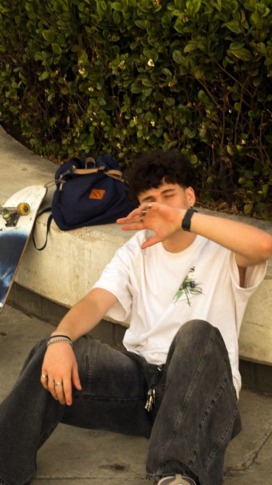
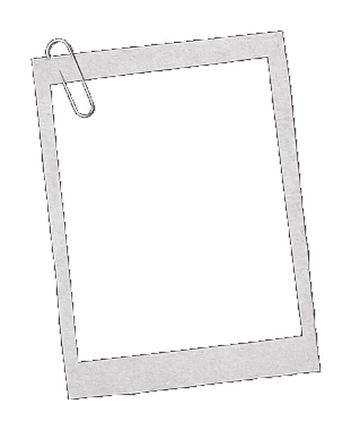
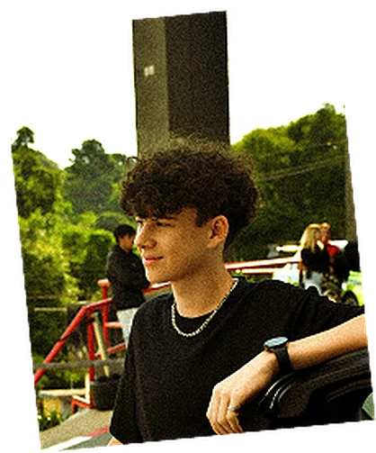
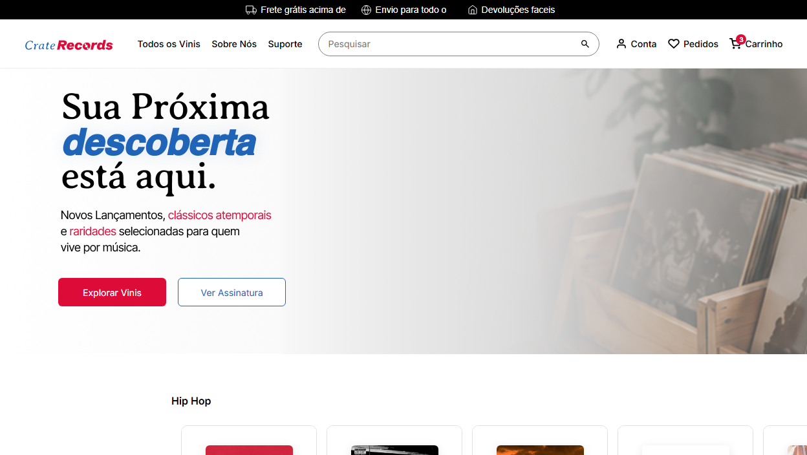
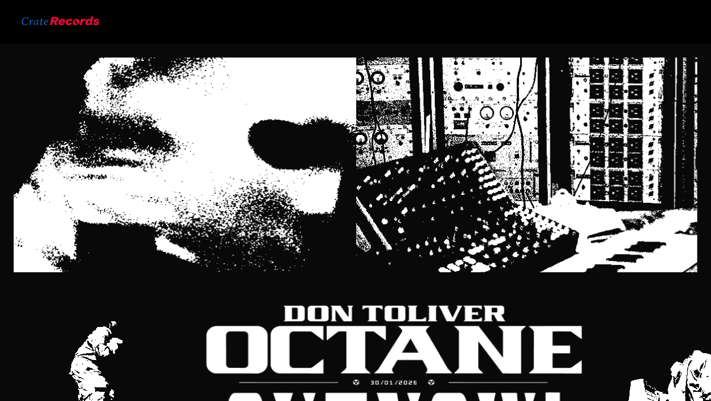
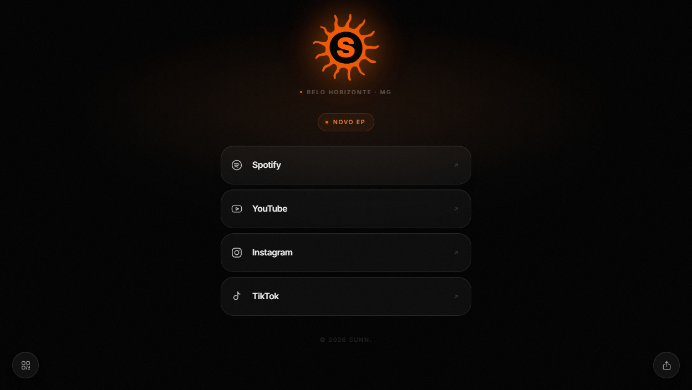
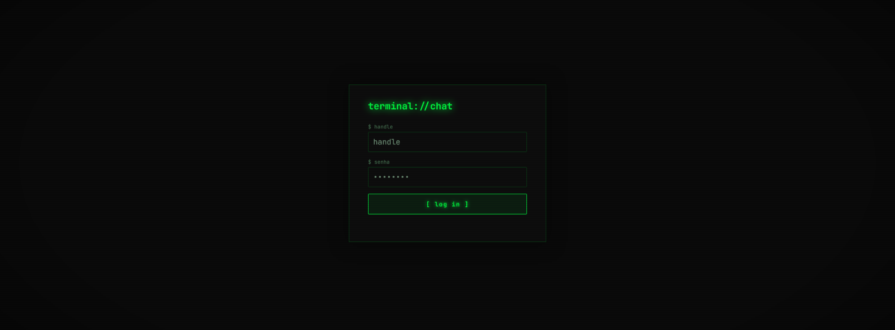

oi, eu sou o davi. programador, desenvolvedor web e produtor musical.
estudo no cotemig e crio interfaces, experiências interativas e soluções criativas com html, css, javascript e c#. além de programador, sou produtor musical.

as linguagens que eu domino e uso para criar interfaces, experiências interativas e soluções criativas.
estrutura e semântica das páginas
layout, estilo e animação
interação e lógica no navegador
lógica e orientação a objetos
além da programação, sou produtor musical. a música é o meu outro jeito de criar.
1 de 7
before sunrise
sunn
small hours
meus projetos que fiz até hoje.
o código dos meus projetos fica no github. é por lá que dá para ver como cada coisa foi construída, linha por linha.
abrir meu github ↗ [LINK DO GITHUB]
tem uma ideia, um projeto ou quer falar de música? me manda uma mensagem.

Uma expêriencia de e-commerce para descobrir, colecionar e viver música em vinil.

Uma experiência de landing page para descobrir, colecionar e viver a música em vinil.

Uma expêriencia de Linktree para minhas plataformas musicais.
projeto 04

Uma expêriencia de chat com estetica de terminal feita com Google Firebase.
música · sunn
além do código, eu produzo música como sunn. small hours é o meu álbum: 7 faixas, lançado em 2026.